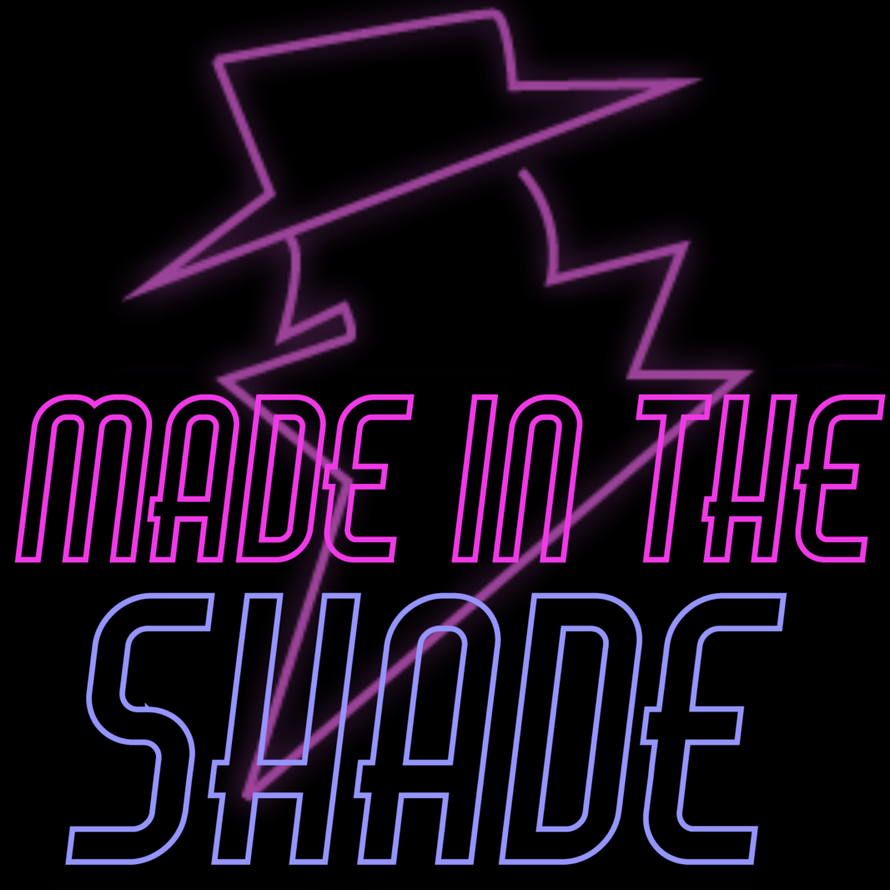
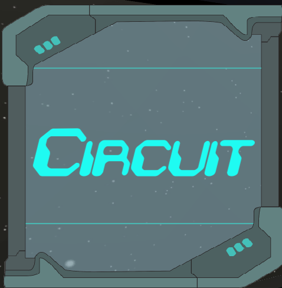
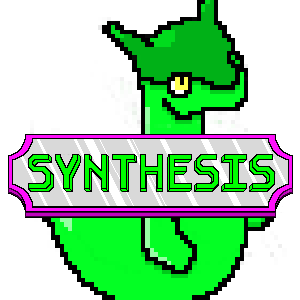
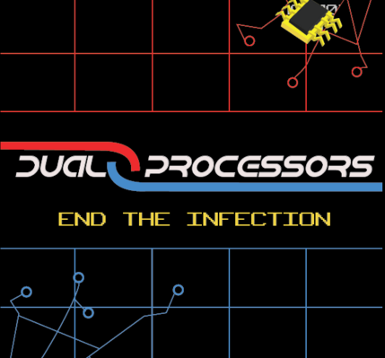

My Projects

Made In The Shade
Made In The Shade is a stealth oriented game from a top-down perspective. Get in to a building, sneak past
obstacles, steal valuables, and get out as fast as possible! I've written a huge part of the code base for this game, I wrote the character controller, character dash and invisibility, camera control, enemy AI, and much more. Made In The Shade also uses Max Miller's
brilliant Input Controller.

Circuit
Circuit is my first major game, made with Jasmine Burks, Grant King, Samuel Garber, and Zach Edouard in MI 445.
Circuit is a 3D first person puzzle game. The player finds themself stranded alone on a ship and must repair the ship in physics based puzzles
in order to reach the bridge and signal for help.
Synthesis
Synthesis is my second game made in MI 455, my team consisted of Paul Powell II, Allen Huynh, Kamen Kessler, and Haosheng Li.
I created the entire grid and highlighting system, essentially the basis for the entire functionality of the game. I also created the enemy AI and many other systems.
Dual Processors
Dual Processors is the first game made in MI 455, my team consisted of Sruthin Gaddam, Olivia Nalon, and Kenny Wherry.